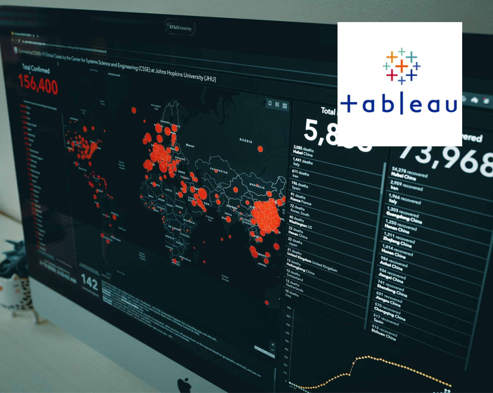

This project entails investigating the root causes of workplace accidents, specifically in the construction industry, and highlighting trends in terms of time of injury, day of the week, level of worker experience, nature of injury (human and environmental factors), and so on, in order to gain insights into the areas that require the most attention in order to reduce future workplace injuries. The Occupational Safety and Health Administration provided this dataset, which comprises summaries of construction worker incidents and injuries in the United Kingdom from 2015 to 2017.
Covid 19 dataset as of March 2022 gotten from Our World In Data was explored to create illustrations Using Tableau to show trends in infection rate and death rate.
Over 50% of a Data Analyst job invloves dealing with messy data, in this project, Nashville housing data gotten from Kaggle was cleaned using Microsoft SQL to allow further analysis

Analysis and reporting done on newly explored and cleaned datasets with the aid of interactive visualizations, dashboards, and stories on Tableau for better communication.

Live Data was obtained from Amazon retail site to monitor daily price changes for a ball valve with the aid of BeautifulSoup, Requests, and Time libraries on Jupyter Notebook.
Positive correlation between movie budget and gross income was observed on movies released in the past four decades with the aid of pandas, seaborn, numpy libraries on Jupyter Notebook.